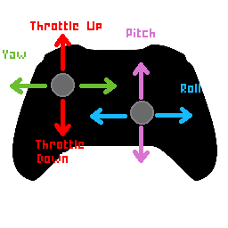
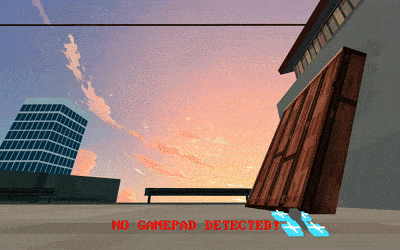
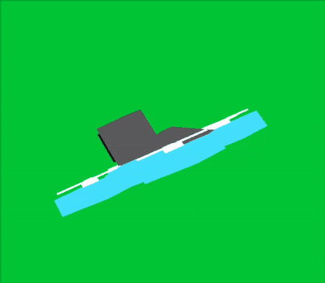
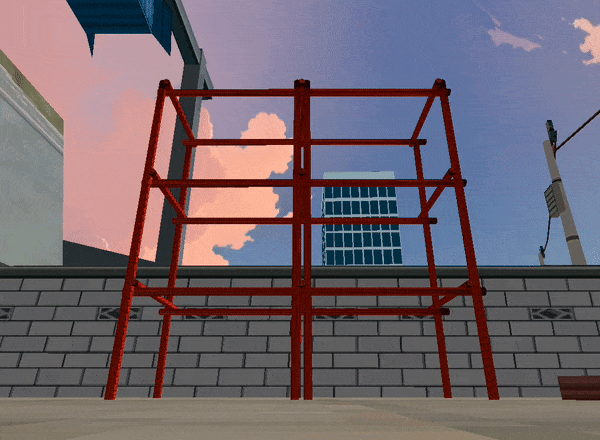

What is Whoops N Hoops
Whoops and Hoops is an arcade drone simulation built with OpenGL which replicates real life drone physics while keeping the arcade feel. The game currently includes realistic drone controlls via controller/radio reciever input, realisitic collision, and trick detection.
Downloads
Raw Download (.zip 18.6 mb)
Installation
Mac OS not yet...
Windows not yet..
Raw make sure you have GLFW, GLEW, OpenGL, freetype, & cmake installed.
Then do:
cd WhoopsNHoops
mkdir build
cd build
cmake ..
make
./WhoopsnHoops
Controls and Setup
There is very minimal keyboard input(there is none), so a controller is highly recommended. Plug in any recognizable controller by your system and it should work. As of now I have only tested an Xbox One controller and the Radiomaster Pocket.
The controls can take a while to get down and there is no way to tweak your rates without editing code so the best advice I could give is move each stick with really good precision slowly (:. Hopefully this diagram helps for getting controlls right.
Motivation and Inspiration
The main inspiration to make a drone arcade game came from old games like Jet Set Radio & the Tony Hawk skateboarding games. The aesthetic of the entire game was heavily inspired by Jet Set Radio which most of the textures came from :p. Flying drones is a fun hobby, and I noticed that most current sims on the market take the realistic approach and none have dived deeper into the arcade feel, especially for the community that is involved with freestyleing. The term whoop just refers to a smaller drone usually in sizes ranging from 65mm to 85mm. They are known for being flown for different styles, including racing and freestyle. This game focuses more on the freestyling approach to flying, but racing modes could be added in the future. I tried to mimic the feel of flying my air65 drone in real life, but there is still definitely some tweaking to be done...
Graphics Fundamentals Implemented
A rough list of the graphic fundamentals implemented includes:
- Obj loading via the tinyobj library
- Hierarchical Model Stack
- Multi Model Obj files
- Sun Direction Shading
- Texture Mapping
- Blinn Phong Shading
- On Screen Text
Gameplay Fundamentals Implemented
A rough list of the gameplay fundamentals implemented includes:
Controller Support
Controller support was possible due to the GLFW library, which allows you to detect and poll gamepad inputs. The library is very well documented, so I was able to add support for both gamepads, like Xbox and PS4 controllers, along with support for actual drone transmitters. To give a rough idea of how this was done I first polled the joystick locations, where each axis for each stick is mapped to the range of -1 to 1. With these values, I could then map them to the yaw, pitch, and roll of the drone along with the thrust for the left stick y-axis, which I would have to clamp to 0-1. Later, I hope to also poll the controller buttons to allow for other functionality like disarming/arming the drone, pausing, and anything else I can think of.
Controler Being detected and me crashing (:
Drone Model Mimicking controller input

Drone Physics
As cool as custom drone physics sounds, the process was very straightforward when it came to the forces acting on the drone, while I admit some of it was magic to me due to the abstraction that the glm library does for quaternions. The Drone is a struct that holds all of its methods to either update position, orientation, or trick state along with every attribute like thrust, gravity, mass, etc. The two main things that were neeeded to have realistic drone movement was orientation and position. Starting with position, I simulated two forces acting on the drone: thrust and gravity. With these two forces and the mass of the drone acceleration could be calculated. After acceleration was calculated we could use delta time to find velocity and likewise position.
Moving on to orientation, I decided to use quaternions to handle the rotations of the drone since I was running into problems when just using euler angles alone plus I found that glm has a header file that makes using them really simple. The drones update orientation would take the mapped pitch, yaw, and roll values create seperate quaternions for each axis to then alter the current rotation quaternion for the drone.
AAB and OBB boxes
For the AABB(Axis Aligned Bounding Boxes) I created a class which handled the construction given a min and max corner. After the data structure was covered along with the needed methods to calculate if two boxes intersect for collision, I made it so that when objects were loaded in via the tinyobj loader they also were packed together with the these AABB objects as well. So, when I would draw the model it would have its bounding box attribute which I could also check for collision against drone.
Regarding the OBB, I would say that the implementation went over my head and it doesn't entirelly work properly with collision between the OBB and AABB data structures because there was a lot of workarounds I went through. So I'll leave it to you to figure out how I can fix it (:
Visualization of AABB
Trick Detection
To give a rough idea of what went behind getting the trick detection semi-working, there were three main steps in tracking the drone's orientation for tricks. First, I would create another method within the drone struct for trick detection, which would be called on every frame. This function would calculate the delta angles for the orientation quaternion, which was easily done via a library function within glm. With these values, I could then keep track of the accumulation of each change in angle so that once a full rotation was done in either axis, a trick would be detected. I ran into the issue of having tricks constantly being detected due to there being no threshold on when the drone's delta angles were calculated, so I introduced a minimum threshold for each angle that must be exceeded before the trick would count. I also added a timer that starts, so the trick would have to be done within a certain time limit. Other than the main logistics of tracking the tricks, a lot of the other work that went in was just a bunch of conditional checks, which could probably be done better..
- Flip: 400 pts
- Roll: 200 pts
- Yaw Spin: 100 pts
- Dive: 10 pts